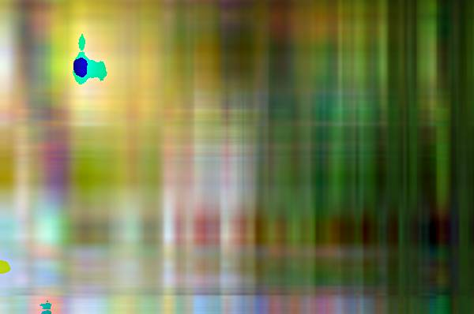

analysis is a frequently occurring application of the dimension reduction technique. Recall from a previous post that employed singular value decomposition to compress an image, that an image is a matrix of pixels represented by RGB color values. Thus, principal component analysis can be used to reduce the dimensions of the matrix (image) and project those new dimensions to reform the image that retains its qualities but is smaller in k-weight.
Image compression with principal component analysis is a frequently occurring application of the dimension reduction technique. Recall from a previous post that employed singular value decomposition to compress an image, that an image is a matrix of pixels represented by RGB color values. Thus, principal component analysis can be used to reduce the dimensions of the matrix (image) and project those new dimensions to reform the image that retains its qualities but is smaller in k-weight. We will use PCA to compress the image of a cute kitty cat below. As the number of principal components used to project the new data increases, the quality and representation compared to the original image improve.
Image Compression with Principal Component Analysis
The jpeg package is very handy for reading and writing .jpeg files.
library(jpeg)
The readJPEG function is used to convert the image into its matrix
representation.
cat <- readJPEG('cat.jpg')
ncol(cat)
## [1] 600
nrow(cat)
## [1] 398
The cat image is now represented as three 600x398 matrices as an array with each matrix corresponding to the RGB color value scheme. Extract the individual color value matrices to perform PCA on each.
r <- cat[,,1]
g <- cat[,,2]
b <- cat[,,3]
Principal component analysis is performed on each color value matrix. As
this example is focused on image compression and not description or
interpretation of the variables, the data does not require centering
(subtracting the variable means from the respective observation
vectors), and the center argument is set to FALSE. If the argument
is not set to FALSE, the returned image will not have the right RGB
values due to having their respective means subtracted from each pixel
color vector.
cat.r.pca <- prcomp(r, center = FALSE)
cat.g.pca <- prcomp(g, center = FALSE)
cat.b.pca <- prcomp(b, center = FALSE)
Collect the PCA objects into a list.
rgb.pca <- list(cat.r.pca, cat.g.pca, cat.b.pca)
We are now ready to compress the image! Now that the principal components are found for each color value matrix, we have new dimensions that describe the original data (pixels). The pixel values are then projected onto the new dimensions of the data for each respective matrix.
The following loop reconstructs the original image using the projections of the data using increasing amounts of principal components. We will see that as the number of principal components increase, the more representative of the original image the reconstruction becomes. This sequential improvement in quality is because as more principal components are used, the more the variance (information) is described. The first few principal components will have the most drastic change in quality while the last few components will not make much if any, difference to quality.
for (i in seq.int(3, round(nrow(cat) - 10), length.out = 10)) {
pca.img <- sapply(rgb.pca, function(j) {
compressed.img <- j$x[,1:i] %*% t(j$rotation[,1:i])
}, simplify = 'array')
writeJPEG(pca.img, paste('compressed/cat_compressed_', round(i,0), '_components.jpg', sep = ''))
}
With three components, the resulting image retains very few of the original image's characteristics.
3 Components

Wow! With just 43 additional components (out of 398 total), the image is much clearer and representative of the original. Remember the first principal components retain the most variation, so we are likely to see significant gains in quality for the first few iterations.
46 Components
The images reconstructed from 89 to 260 components are very similar, and only slight gains in quality are made after each iteration.
89 Components
131 Components
174 Components

217 Components
260 Components
The recreated image with 302 components is identical to the original (at least to me). The remaining iterations will, therefore, have little improvement.
302 Components
345 Components
388 Components
We can check the compression ratio for each iteration compared to the original image with a quick loop.
original <- file.info('cat.jpg')$size / 1000
imgs <- dir('compressed/')
for (i in imgs) {
full.path <- paste('compressed/', i, sep='')
print(paste(i, ' size: ', file.info(full.path)$size / 1000, ' original: ', original, ' % diff: ', round((file.info(full.path)$size / 1000 - original) / original, 2) * 100, '%', sep = ''))
}
## [1] "cat_compressed_131_components.jpg size: 31.219 original: 51.579 % diff: -39%"
## [1] "cat_compressed_174_components.jpg size: 31.646 original: 51.579 % diff: -39%"
## [1] "cat_compressed_217_components.jpg size: 31.63 original: 51.579 % diff: -39%"
## [1] "cat_compressed_260_components.jpg size: 31.248 original: 51.579 % diff: -39%"
## [1] "cat_compressed_3_components.jpg size: 17.111 original: 51.579 % diff: -67%"
## [1] "cat_compressed_302_components.jpg size: 31.021 original: 51.579 % diff: -40%"
## [1] "cat_compressed_345_components.jpg size: 31.009 original: 51.579 % diff: -40%"
## [1] "cat_compressed_388_components.jpg size: 31.015 original: 51.579 % diff: -40%"
## [1] "cat_compressed_46_components.jpg size: 29.135 original: 51.579 % diff: -44%"
## [1] "cat_compressed_89_components.jpg size: 30.614 original: 51.579 % diff: -41%"
Image compression with principal component analysis reduced the original image by 40% with little to no loss in image quality. Although there are more sophisticated algorithms for image compression, PCA can still provide good compression ratios for the cost of implementation.
Summary
Image compression with principal component analysis is a useful and relatively straightforward application of the technique by imaging an image as a \((n \times p)\) or \((n \times n)\) matrix made of pixel color values. There are many other real-world applications of PCA, including face and handwriting recognition, and other situations when dealing with many variables such as gene expression experiments.
References
http://www.scielo.br/scielo.php?script=sci_arttext&pid=S1679-45082012000200004